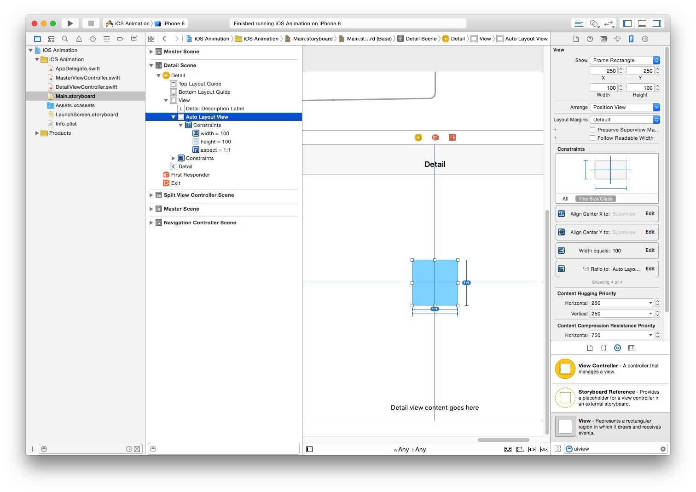
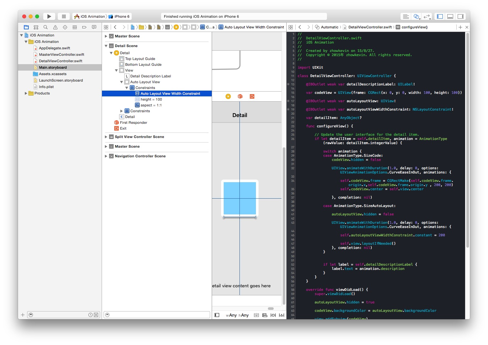

在进行动画前，我们先要理解 UIView 和 CALayer 的关系。
CALayer 是 iOS 系统绘制图形的底层类，UIView 是基于 CALayer 的上层类，具有 CALayer 的全部功能，并且多了对用户交互事件的响应能力，就像乳鸽肚子里塞了小乳鸽一样，UIView 同时还具备容器的特性。
而 iOS 主要有两种动画方式，一种是底层一些的 Core Animation 直接针对 CALayer，一种是顶层一些的 UIKit 针对 UIView，UIKit 使用起来要方便一些，但是支持的参数没有 Core Animation 多，可定制性也会差一些。
有时候你可能只是想进行一些简单的大小和位置变化，那么可以直接用 UIView 动画来实现
UIView.animateWithDuration(1.0, delay: 0, options:
UIViewAnimationOptions.CurveEaseInOut, animations: {
self.codeView.frame = CGRectMake(0, 0, 200, 200)
// 可以修改多个属性
}, completion: nil)
1.0 指的是动画执行的总时间， delay 可以设定是否延迟执行， options 可以设定动画的执行模式，CurveEaseInOut 是渐入渐出，如果你做过幻灯片的话应该对这个很熟悉。UIViewAnimationOptions 的可选参数非常多，你可以根据文档查看。
UIView 动画可以操控的属性如下
| 属性 | 描述 |
|---|---|
| frame | 相对于父层 view 的大小和位置 |
| bounds | view 的大小 |
| center | 相对于父层的中心 |
| transform | 变形 |
| alpha | 透明度 |
| backgroundColor | 背景色 |
| contentStretch | 内容显示模式 |
参考 View Programmings Guide For iOS
如果想用 Core Animation 来实现上面的动画，做的就要复杂的多
// 针对你想要修改的属性创建一个 Animation
let animation = CABasicAnimation(keyPath: "frame")
// 设置动画初始值
animation.fromValue = CGRectMake(0, 0, 100, 100)
// 设置动画结束时候的值
animation.toValue = CGRectMake(0, 0, 200, 200)
// 动画重复多少次
animation.repeatCount = 0
// 最后，将动画添加到 Layer 上
self.view.layer.addAnimation(animation, forKey: "frame")
Core Animation 动画可以操控的属性非常多，就不一一列举了，你可以从这里查看 Core Animation Animatable Properties
相较而言，如果不是做比较复杂的动画，一般 UIKit 就可以满足你的需求。
纯代码和 AutoLayout 各要处理情况不尽相同，纯代码相对而言要直接的多，但是 AutoLayout 就略为复杂。
你可以在 这里 下载到我们的 Demo
纯代码的动画实现非常简单，在 Demo 里 codeView 是使用纯代码添加到界面上，我们用 UIView 动画修改了它的 frame 和 center。
UIView.animateWithDuration(1.0, delay: 0, options:
UIViewAnimationOptions.CurveEaseInOut, animations: {
self.codeView.frame = CGRectMake(self.codeView.frame.origin.x,
self.codeView.frame.origin.y , 200, 200)
self.codeView.center = self.view.center
}, completion: nil)
这里比较麻烦的是你需要自己计算比较多的参数，这一点在上一章中已经有所体现。
AutoLayout 因为是使用约束对界面进行绑定，所以思路就要转换一下，此时你就不需要再直接操作其属性，而是更改其绑定，让 AutoLayout 自动处理约束绑定变更后的大小。
首先給 autoLayoutView 添加一个宽度 100 的约束，然后在选中 autoLayoutView 的情况下，按住 control 拖到 autoLayoutView 上，给自己添加一个 aspect 的比例约束为 1:1。这样高度就会自动设置为和宽度相等。

接下来，我们选中 autoLayoutView 的 width 约束，把它作为一个 outlet 拖拽到 ViewController 里并命名为 autoLayoutViewWidthConstraint

由此你就可以在 ViewController 里操控约束了，下面就是我们对 AutoLayout 动画的操控代码。
UIView.animateWithDuration(1.0, delay: 0, options:
UIViewAnimationOptions.CurveEaseInOut, animations: {
self.autoLayoutViewWidthConstraint.constant = 200
self.view.layoutIfNeeded()
}, completion: nil)
上面我们还执行了 autoLayoutView 父层 view 的 layoutIfNeeded 方法，这是通知 self.view AutoLayout 的约束有变化，让其重新计算布局。